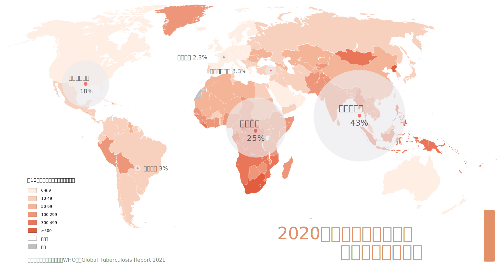
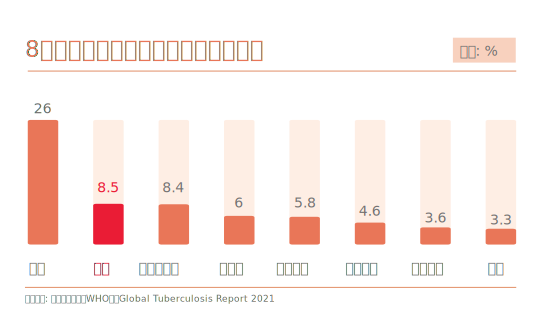

历史上，白色瘟疫笼罩欧洲城市。如今，离开了欧洲大陆的白色瘟疫并没有消失，而是将目标对准了发展中国家。
以英国为例，在十七世纪的英国农村，结核病并不常见，有限的人类交往阻碍了疾病传播。
十八世纪，由于工业革命兴起，城市的发展带来人口频繁流动，大量劳动力从农村涌向城市，城市化进程加速。 但是人们的生活条件并没有得到相应的改善。工业化厂房阴冷潮湿，居民区居住拥挤，卫生条件差， 加上繁重的体力劳动和严重的营养不良，给了结核病菌创造了很好的生存和传播条件。
1799年，英国每3.8个死亡者中有一个死于结核病。 后来，结核病在欧洲和北美大肆流行，穷人成为主要入侵对象。由于缺乏良好的医疗条件，结核病夺走了许多人的生命。 19世纪，结核病大约杀死了四分之一的欧洲成年人口。 19世纪末，欧洲和北美地区约70-90%的城市人口携带结核杆菌，约80%发病的人口死亡。 但从这以后，结核病在欧洲和美国的死亡率开始逐渐下降。
随着经济的发展，城市居住环境逐渐改善，医疗水平也不断提高，早期城市化的国家逐渐控制住结核病的传播。1944年瓦克斯曼发明的链霉素使结核病不再是不治之症。 抗生素、卡介苗以及各种化疗药物的出现让全球肺结核患者大大减少。曾经被白色瘟疫笼罩的欧洲城市，如今已拨开迷雾。
离开了欧洲大陆的白色瘟疫并没有消失，而是将目标对准了发展中国家。从地理区域上看，2020年，大多数结核病病例发生在东南亚（43%）、非洲（25%）和西太平洋区域（18%）。

8个国家的病例占到全球总数的三分之二：印度（26%）、中国（8.5%）、印度尼西亚（8.4%）、菲律宾（6.0%）、巴基斯坦（5.8%）、尼日利亚（4.6%）、 孟加拉国（3.6%）和南非（3.3%）。这些国家均为发展中国家。
在今天，结核病的发病情况同经济发展水平与人口规模密切相关。欠发达国家和地区由于居住环境不佳和医疗投入不足，加上巨大的人口压力，成为传染病的高发地。 甚至有人评价，在高收入国家，人们主要死于慢性病；在低收入国家，人们主要死于传染病。